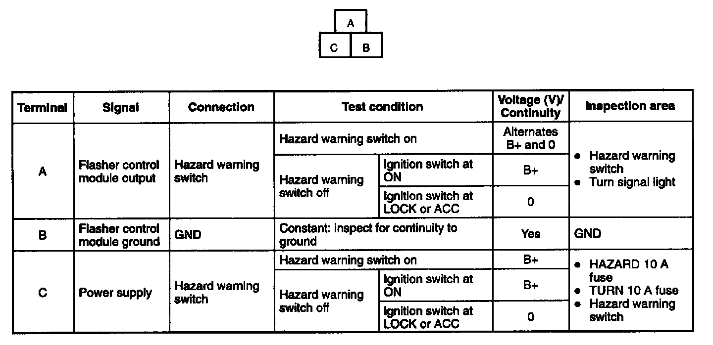

Hazard Warning Flasher: Testing and Inspection
FLASHER CONTROL MODULE INSPECTION1. Measure the voltage at the flasher control module terminals as indicated below.
2. Disconnect the flasher control module connector before inspecting for continuity at terminal B.
3. If not as specified, inspect the parts listed under "Inspection area" and the related wiring harnesses.
4. If the parts and wiring harnesses are okay but the system still does not work properly, replace the flasher control module.

Terminal Voltage List (Reference)